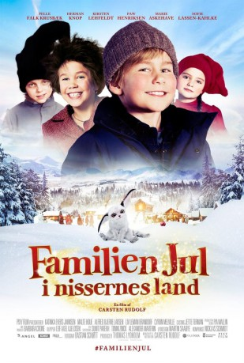

#10322 Der Kleine Wichtel kehrt zurück
Alternativ: The Christmas Family 2 (Englischer Titel)
 
 IMDB-Wertung: 4.8 / 10
IMDB-Wertung: 4.8 / 10  Metascore: 0
Metascore: 0 
Ein Jahr ist seit Pixys Besuch vergangen und Weihnachten naht wieder. Prompt erscheint auch Pixy wieder, um seine Wichtelmütze abzuholen. Die enthält nämlich etwas sehr Wichtiges: Seine Wichtelkugel, in der all' seine Magie steckt. Jeder Wichtel besitzt eine solche Kugel. Er mahnt Hugo noch, die Kugel nicht anzurühren, doch Hugo kann nicht widerstehen und macht die Kugel prompt kaputt. Die Katastrophe ist perfekt, denn nun besitzt Pixy keine magischen Kräfte mehr und altert zusehends. Familie Weihnacht beschließt, gemeinsam ins Wichtelland zu reisen, um dort die Kugel reparieren zu lassen. Doch auf der abenteuerlichen Reise passiert so einiges, mit dem die Familie nicht gerechnet hätte ...
Jahr: 2016
Dauer: 85 Minuten
FSK: 0
Land: Dänemark Studio: EuroVideoTonspuren:
Untertitel:
Auflösung: SD (720x428) Größe: 799 MB
Genre: Abenteuer, Familie
Regisseur: Carsten Rudolf
Drehbuch: Carsten Rudolf
Soundtrack: Nicklas Schmidt
Darsteller:
- Marie Askehave als Agnete
- Pelle Falk Krusbæk als Hugo
- Sofie Lassen-Kahlke als Fru Knudsen
- Cyron Melville als Martin
- Alfred Bjerre Larsen als Alfred
 Johanna Brüel als School Teacher
Johanna Brüel als School Teacher- Katinka Evers-Jahnsen als
 Paw Henriksen als Niels
Paw Henriksen als Niels- Malte Houe als
- Herman Knop als Pixy
- Kirsten Lehfeldt als
- Liv Leman Brandorf als Vega
- Keijo Salmela als Nisse
Datei: X:\Märchen\Kleine Wichtel kehrt zurück, Der (2016, FSK0, 720x428).mkv seit 29.12.2018
Festplatte: Kinder-Filme+Trick
 Es gibt insgesamt 61 Filme in der Gruppe 'Märchen'
Es gibt insgesamt 61 Filme in der Gruppe 'Märchen'